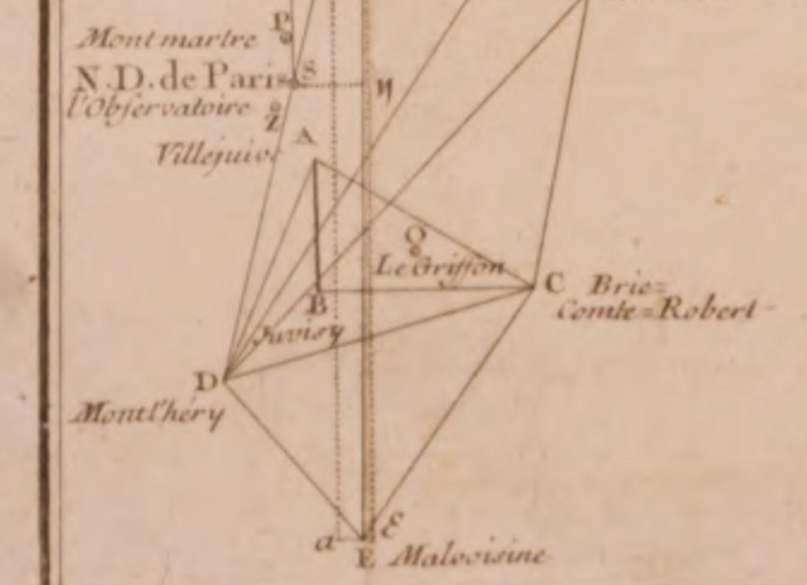
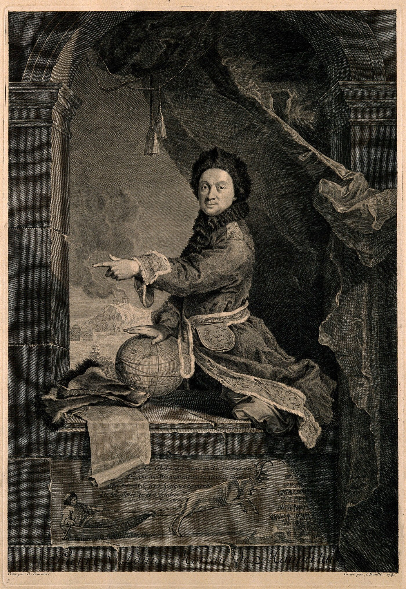
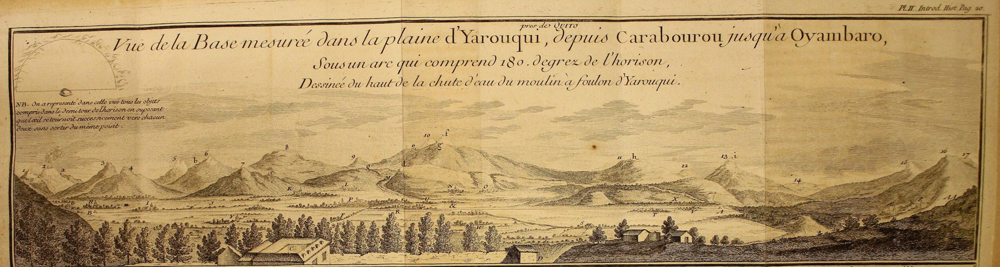
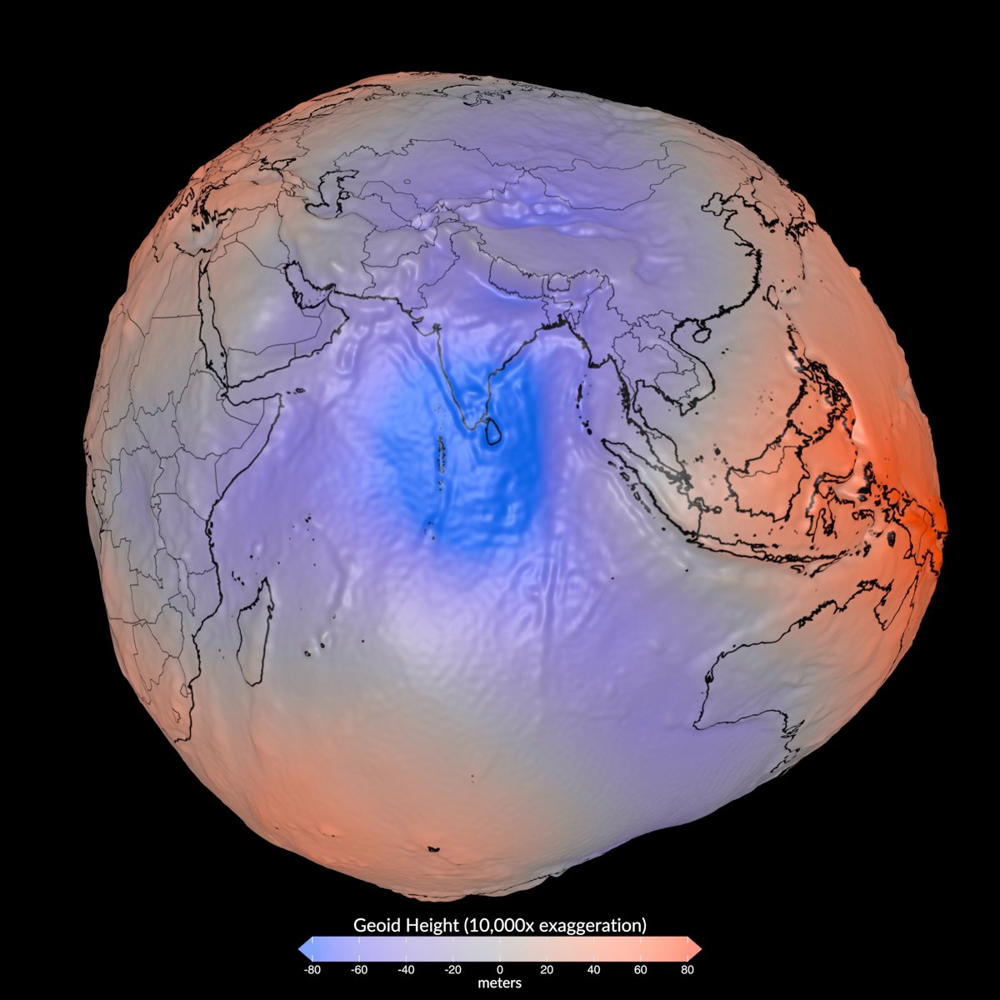

File 002
How Humans Learned to Measure the Earth
From shadows in Egypt to a frozen river in Lapland and satellites in orbit, how people measured one degree of latitude until they knew the Earth’s size and shape.
Open a map on your phone, and a blue dot finds you. The phone works out your latitude and longitude on a model of the Earth called WGS 84, the World Geodetic System 1984 used by the Global Positioning System (GPS).1 The model is a slightly squashed ball called an ellipsoid. From its center to the equator is 6,378,137 meters, and from its center to either pole is about 21 kilometers less.2 The ellipsoid is defined by two numbers, one for the Earth’s size and one for its squash. The phone needs only a few seconds to find you, but working out those two numbers took people about 2,000 years.
In File 001, The Map Room, the Earth’s curve showed up as the thin gaps that rows of flat map sheets would, in theory, leave when laid edge to edge. How curved it is, and in what shape, is a much older question. Latitude was the easier part. North of the equator, the height of the celestial pole, the point in the sky that the stars turn around, tells you roughly how far north you are. The hard part was turning degrees in the sky into distance on the ground. People could measure one degree of latitude, which is the distance you travel north before the stars shift by one degree. Comparing degrees measured far apart is how they learned the Earth’s shape.
Eratosthenes needed a shadow and a distance
In the third century BC, the Greek scholar Eratosthenes started from two Egyptian cities he took to lie on the same north–south line. At noon on the summer solstice, sundials at Syene, far up the Nile, cast no shadow, because the sun stood straight overhead. At Alexandria the shadow in a bowl-shaped sundial covered 1/50 of a full circle. He used a distance of 5,000 stadia between the cities (a stadion was an ancient Greek unit of distance) and concluded that the whole Earth was 50 times that distance, or 250,000 stadia around.3,4
Sunlight arrives in parallel rays, so the slant of the shadow at Alexandria equals the angle between the two cities at the Earth’s center (Fig. 1). If that angle is 1/50 of a circle, the distance between the cities is 1/50 of the way around. This method of finding the Earth’s size is called arc measurement. Every survey in this story uses it.
Fig. 1Eratosthenes’ method, as the only detailed ancient account describes it. Parallel sunlight casts no shadow at Syene and a slanting one at Alexandria, and the slant equals the angle between the two cities at the Earth’s center. The angle is drawn far larger than the account’s 1/50 of a circle (7.2°) so it can be seen.Drawing: The Shape-Files · illustration, not to scale
The famous well at Syene, lit to the bottom by the noon sun, comes from other ancient writers and isn’t part of his method.5,6 The only detailed account of the method, written two centuries or more later by the Greek writer Cleomedes, treats the 5,000 stadia as an assumption, and nobody knows how long Eratosthenes’ stadion was. Depending on which length you assume, his Earth comes out slightly too small or about 16% too large.7 The weak link was the distance.
Triangles made the distance measurable
The distance remained the weak link for centuries. In the 1520s Jean Fernel tried a different approach. He went north from Paris until the celestial pole stood a degree higher, then rode home in a coach, counted the turns of its wheel, and subtracted a guess for the road’s bends and hills. His answer came so close that a later surveyor concluded Fernel’s guess for the road must have offset an error elsewhere in his work.8
In 1615 the Dutch mathematician Willebrord Snellius found a way around the problem. He measured a short base on the ground, about 328 meters, and took everything else as angles between church towers. Once one side and the angles of a triangle are known, its other sides can be calculated, and one of those sides becomes the starting side of the next triangle. Through a chain of such triangles, Snellius stretched his 328 meters into the 130 kilometers between Alkmaar and Bergen op Zoom. This was the first arc measurement made by triangulation.9
His triangles were sound, but his latitude measurements, read from the sky with open sights instead of telescopes, were not, and his degree came out 3.5% short.10 One of his towers was hardly needed: Gouda’s tower already anchored that part of the network. Snellius added nearby Oudewater anyway, and the geodesist who recomputed the survey concludes that he wanted to visit his widowed mother there.9
Half a century later, Jean Picard, an astronomer of the Académie des sciences in Paris, fixed the weak point by putting telescopes with crosshairs on his instruments, both for the angles between stations and for the stars. South of Paris, he measured an 11-kilometer base along a straight paved road, using rods made from wooden pike shafts. From there he extended the measurement north toward Amiens through 13 triangles (Fig. 2).8


Picard’s degree came to 57,060 toises. A toise was a French measure of about 1.95 meters, so his degree was about 111.2 kilometers, which is very close to the true length there. Later checks found errors in his work that, as a 19th-century historian put it, “by accident almost balanced each other,” so the closeness was partly luck.11
A short pendulum raised a harder question
One degree, however well measured, can’t reveal a shape. On a perfect sphere every degree is the same length, so the test is to compare degrees measured far apart. The first hint that the Earth isn’t a sphere came from a pendulum. A pendulum’s swing depends on gravity. If it is adjusted to beat seconds, its length gives a way to compare the strength of gravity in different places. In 1672 the astronomer Jean Richer, sent to Cayenne in South America, found that his seconds pendulum had to be made shorter there than in Paris to keep time.12 Near the equator, gravity pulled a little less.
Isaac Newton explained why in his Principia of 1687. The Earth’s rotation slightly reduces the apparent pull of gravity at the equator. It also makes the Earth bulge there, putting a pendulum farther from the center. Newton estimated that the poles sit about 1/230 of the Earth’s radius closer to the center than the equator does. That ratio, the difference between the two radii as a fraction of the larger, is called the flattening.13,14
Newton’s bulge could be tested on the ground. Walk north and the ground curves under you, so straight down, the line a plumb bob hangs along, tilts against the stars. One degree of latitude is how far you walk for it to tilt by one degree. Where the Earth is flatter, the ground curves more gently, so you walk farther for the same tilt. On a flattened Earth, degrees get longer toward the poles.15
The Paris Observatory’s own survey said the opposite. By 1718 Jacques Cassini and his father had run a chain of triangles through Paris from Dunkirk to Collioure, near the Spanish border. Their arc was six times longer than Picard’s, and it showed degrees shrinking northward.16 By the rule above, degrees that shrink toward the pole mean an Earth stretched toward the poles, like an egg standing on end. Now there were two answers. Newton had a theory and a pendulum, and the Cassinis had a survey across the whole of France.
Neither side could be sure. From one degree to the next, the Cassinis’ degrees changed by only about 60 meters. An error of just 2 arcseconds in a star sighting could produce a change that large, and 2 arcseconds is about the width of a quarter seen from 2.5 kilometers.17
Lapland and Peru showed which way the Earth is squashed
The instruments of 1718 couldn’t settle a change that small. The Académie’s answer was two arc measurements as far apart as it could reach. If Newton was right, a degree near the Arctic Circle would be longer than one at the equator, and if the Cassinis were right, it would be shorter. In 1735 one party sailed for the equator, near Quito, in what is now Ecuador, which the French then counted as part of Peru.18,19 In 1736 another went to Lapland, at the Arctic Circle, then part of Sweden.
The Arctic party, led by Pierre-Louis Moreau de Maupertuis, set its triangles on hilltops along the Torne River valley and measured its base on the river itself once it froze, starting on the winter solstice. Two teams measured the same 14 kilometers of ice and differed by about 11 centimeters. It was cold enough that even brandy, the only drink they could keep liquid, left their lips and tongues stuck to the cup.15,20
The result went Newton’s way: Lapland’s degree came out longer than any degree measured in France. The Cassinis’ supporters in Paris resisted it.21 Maupertuis was portrayed in Lapland furs with one hand pressing down on a globe (Fig. 3), and Voltaire, then his friend, took to calling him a flattener. In one letter Voltaire addressed him as “my dear flattener of worlds and of Cassinis.”22


The Peru party took far longer. It measured a base on the high plain of Yaruquí (Fig. 4) and carried a chain of more than 30 triangles south through the Andes.23 At one festival, young clowns who had watched the astronomers at work mimicked them in the arena with quadrants of wood and painted paper, and Charles-Marie de La Condamine, one of the party’s three French academicians, “saw nothing more amusing during the ten years of the voyage.” In August 1739 the party’s surgeon was attacked by a mob at a bullfight in Cuenca.18 La Condamine wrote that the surgeon “died four days later of his wounds, in my bed.”19


Corrected to sea level, Peru’s degree came within about 34 meters of today’s value, and it was more than a kilometer shorter than Lapland’s.23 France, meanwhile, had reversed itself. Jacques Cassini’s son, César-François Cassini de Thury, remeasured the French meridian from 1739, and in 1744 he concluded that the degrees shrink toward the equator, “and consequently that the figure of the Earth is flattened.”17 Newton had won the argument over the direction. The amount was another matter. Depending on which degrees they compared, estimates of the Earth’s flattening ranged from more than twice the true value to nearly the right answer (Fig. 5).17,23
Fig. 5One degree of latitude in kilometers, as each survey measured it, against today’s WGS 84 value. Degrees do lengthen toward the poles. Cassini’s two French degrees slope the wrong way, Lapland’s degree of 1736–37 sits far above the curve, and Peru and the 1801–03 remeasurement of Lapland land almost on it.Drawing: The Shape-Files · values from the surveys’ reports, converted from toises and Rhineland rods
Lapland’s own degree, it later turned out, was too long. Swedish surveyors who remeasured the arc in 1801–03 found the distance on the ground almost exactly right and the star sightings off. Their report blamed the instrument used for those sightings, which the slightest bend on the long trip north could have thrown off, and it ruled out the pull of the nearby mountains on the plumb line.24 Lapland’s error was bigger than the real difference between a Lapland degree and a French one, so Lapland alone had proved little. The verdict held because Peru and the new French survey carried it.
It took satellites to measure how much
That verdict settled which way the Earth is squashed, but not by how much. An ellipsoid, the shape you get by spinning an ellipse about its short axis, needs only two numbers: the radius at the equator and the flattening. From the 1830s on, geodesists fitted ellipsoids to the arcs they had, and different countries adopted different ones. North America used the Clarke ellipsoid of 1866.25,26 The equatorial radii of these ellipsoids differ by more than a kilometer, because each was fitted to different arcs on a planet that isn’t smooth.
Gravity defines another surface, called the geoid. It is an irregular level surface that follows mean sea level and continues beneath the continents. Because gravity acts at right angles to it, a plumb line hangs perpendicular to the geoid, not necessarily to a smooth ellipsoid.25 The geoid falls about 106 meters below the ellipsoid south of India and rises as much as 85 meters above it elsewhere (Fig. 6).27 Where the geoid slopes, the direction of a plumb line shifts too, so a latitude measured from the stars can differ slightly from the latitude on the ellipsoid.


Satellites finally measured the flattening. The Earth’s equatorial bulge pulls unevenly on a satellite and slowly turns the plane of its orbit, at a rate that depends on the size of the bulge. By 1959 the orbits of Sputnik 2 and Vanguard 1 put the flattening at about 1/298.28,29 Later satellites refined that into WGS 84, which keeps the equatorial radius at 6,378,137 meters and sets the flattening at 1/298.257223563.2
Every coordinate still rests on those two numbers
Every geographic coordinate system names an ellipsoid. A shapefile keeps its coordinate system in a small file beside it, the .prj, and for WGS 84 the two numbers are written out in plain text: 6378137, and 298.257223563, the inverse of the flattening.30,31 Much of North America’s older mapping used the Clarke ellipsoid, about 69 meters larger at the equator.26 Moving such data onto WGS 84 takes more than swapping one ellipsoid for another, but it starts with the file saying which Earth it was drawn on. Which Earth, and where it sits on the real one, is the subject of File 003, Latitude, Longitude and the Datum Problem.
Back on the phone, the blue dot rests on those two numbers. By those numbers, someone standing at 40° north, roughly the latitude of Philadelphia, is about 4,430 kilometers from the equator. On a sphere built from Snellius’ short degree, that distance would be about 135 kilometers shorter. On a perfect sphere built from Picard’s degree, it would be about 19 kilometers too long, because a sphere leaves out the squash. The phone computes the degree under your feet from a model built one measured degree at a time.